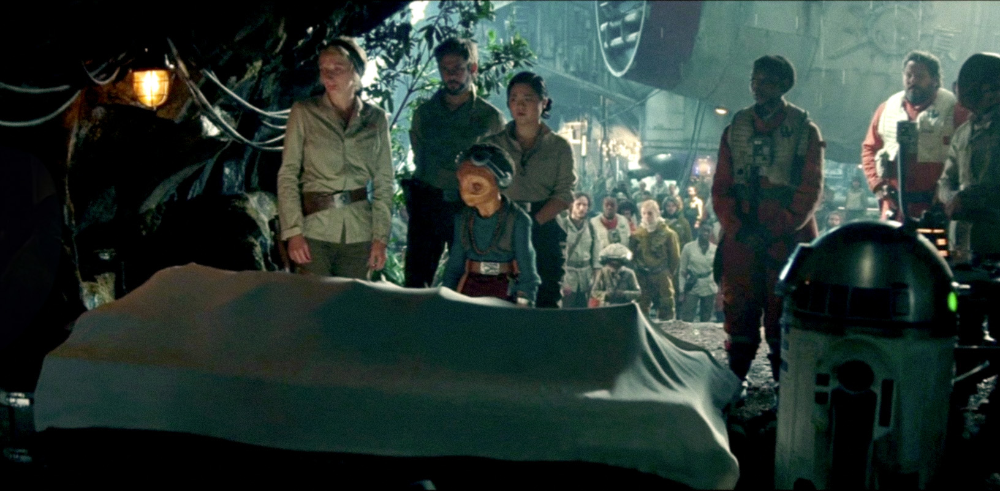

Princess Leia Organa followed in her birth mother and adoptive father’s footsteps by becoming one of the youngest senators to serve in the Imperial Senate. She was also secretly a member of the Rebel Alliance fighting against the Galactic Empire. After the battle of Endor and the fall of the Empire in 4 ABY, she married the Corellian smuggler Han Solo and gave birth to their son, Ben, a year later.
After Kylo Ren’s fleet tore open the side of Leia’s ship, she was sucked into the vacuum of space. She was able to use the force to pull herself back to safety but it unfortunately took a heavy toll on her body. In the following months, her health continued to decline drastically. Her brother, Luke, urged her to let go and become one with the force like he did but she resisted, until finally, after sensing the confrontation between the Jedi, Rey, and her son in 35 ABY (Episode IX), she decided it was time. Leia used the last of her strength to reach out with the force and call out Kylo’s birth name in an attempt to bring him back to the light side.
